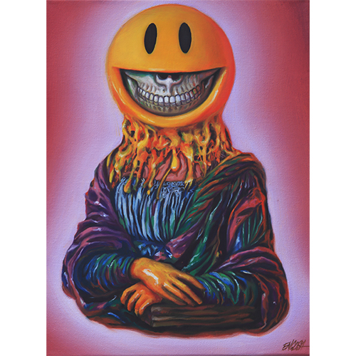

Bangkok Mona Lisa Grin (2015)
Home
2010s
2015

Title:
Bangkok Mona Lisa Grin
Date:
2015
Medium:
Oil on canvas
Dimensions:
9 × 12 inches
Work ID:
RE-001276
Signature / marks:
Signed “ENGLISH,” lower right.
Notes
This work references Leonardo da Vinci’s
Mona Lisa
.
Reference sculpture created by Ron English and photographed as a model for
Bangkok Mona Lisa Grin
.
Leonardo da Vinci,
Mona Lisa
, c. 1503–1506. Public domain reference image.